Fase 3 · Faro 2 de 3
El formulario largo. Seis estados del asistente público
/student/enroll, capturados contra el entorno de QA con el mismo guión de
medición que Miembros y que Perfil, a 1440×900, antes y después. El código está escrito,
la suite en verde, el tipo comprobado y los 81 casos de punta a punta del alta pasando.
Es el faro elegido por ser lo más largo que el producto le pide a una persona: cinco pasos,
veinte campos, cuarenta y cinco mensajes de error literales y un contrato de comportamiento
cubierto por enroll-qa.spec.ts. La consigna de la fase —cambia cómo se
ve, no qué hace— se cumple con esos 81 casos verdes sin tocar una sola regla.
El aire muerto se mide igual que siempre: la distancia entre el borde inferior del contenido más bajo y el fondo de la ventana, dividida por el alto de la ventana. Es el hueco que la persona ve vacío sin scrollear. Se midieron los seis estados del recorrido de un representante, que es el más largo de los dos.
| Estado | Antes | Después | Alto del documento | Qué lo movió |
|---|---|---|---|---|
| Paso 1 · Tipo | 21% · 193px | 27% · 244px | 900 → 900 | Subió, y es el número que hay que leer con cuidado — ver abajo. |
| Paso 2 · Estudiante | 0% · 0px | 0% · 0px | 1220 → 1154 | No había hueco y no lo hay; el paso mide 66px menos. |
| Paso 3 · Representante | 11% · 99px | 7% · 59px | 1242 → 1193 | El ritmo a tres escalones y la tarjeta al relleno del sistema. |
| Paso 4 · Salud | 13% · 121px | 11% · 97px | 1160 → 1088 | Ídem, más el separador de 32px que pasó a 20px. |
| Paso 5 · Resumen | 0% · 0px | 0% · 1px | 1356 → 1249 | Sin hueco antes y después; 107px menos de scroll. |
| Pantalla de éxito | 44% · 393px | 28% · 253px | 900 → 900 | El sobrante repartido, y la pantalla diciendo qué sigue. |
El 21% del paso 1 pasó a 27%, y el contenido no perdió nada. El alto del
documento es el mismo —900px, la pantalla no scrollea ni antes ni después— y el paso
muestra exactamente la misma información. Lo que cambió es que ocupa
51px menos: el borde inferior del contenido subió de 707px a 656px. Salió
de cuatro lugares, todos de la misma decisión —el ritmo a los tres escalones declarados—:
la tarjeta pasó de p-6 sm:p-8 (32px) al relleno de tarjeta del sistema (20px),
y las tres separaciones de primer nivel que estaban escritas a mano (24px, 24px, 32px)
pasaron al escalón de página. Es la pantalla apretándose, no vaciándose. La alternativa
—dejar 32px de relleno para que el número bajara— es exactamente inflar la caja para
maquillar la métrica, y el paso 1 no tiene un dato honesto más que poner: pregunta una sola
cosa. Se prefirió reportar el número plano antes que mejorarlo estirando aire.
El otro número: los cuatro pasos que sí scrollean suman 294px menos de alto de documento (4978 → 4684). El formulario entero se lee con menos rueda.
Antes de tocar una etiqueta había que desarmar una trampa. WizardInput derivaba
el id del input del texto de su etiqueta
(slugifyLabel), y tests/e2e/enroll-qa.spec.ts tenía una
réplica de esa misma función para resolver sus casos con
#enroll-${slug(etiqueta)}. O sea: el texto visible era el selector.
| Qué | Antes | Después |
|---|---|---|
De dónde sale el id |
De la etiqueta, slugificada | De ENROLL_FIELD_TOKEN, declarado por campo |
| Llamadas del E2E atadas al texto | 145 | 0 |
| Etiquetas distintas que el test conocía | 18 | 17 ids, ninguna etiqueta |
| Etiquetas renombradas en este cambio | 11 · 81 casos E2E siguen pasando | |
Renombrar una etiqueta rompía cuarenta casos, en silencio.
La regla de las palabras pide sacar «del Representante» de siete etiquetas que viven
dentro de una tarjeta titulada «Datos del representante». Hacerlo movía
#enroll-nombres-del-representante —y seis más— por debajo de cada caso que
los apuntaba. No es que fallara ruidoso: el selector simplemente dejaba de encontrar
nada. Por eso el desacople entra en el mismo PR que el renombrado, y
no después: son una sola operación.
El id es del campo, no de la copia.
ENROLL_FIELD_TOKEN (en enroll-utils.ts) es un
Record<EnrollField, string> total: un campo nuevo no
se puede agregar sin contestar «cuál es su id». WizardInput y
WizardTextarea aceptan ahora un field explícito y
slugifyLabel queda como respaldo, para los dos asistentes que todavía no
declararon los suyos. Del lado del test la tabla se
transcribe en vez de importarse, a propósito: si alguien cambia un id
en el producto, el espejo tiene que enterarse rompiéndose, que es justo lo que un
import impediría.
El mock de instituciones no respondía como el servidor.
mockBaseRoutes devolvía [] donde el cliente real espera el
sobre paginado {items, total, skip, limit}, así que
fetchInstituciones lanzaba ApiClientError y el catálogo
quedaba vacío por error. Nadie lo notó porque el fallo era mudo — que es
exactamente el sub-estado que este cambio destapa (§5). El mock ahora responde como el
endpoint.
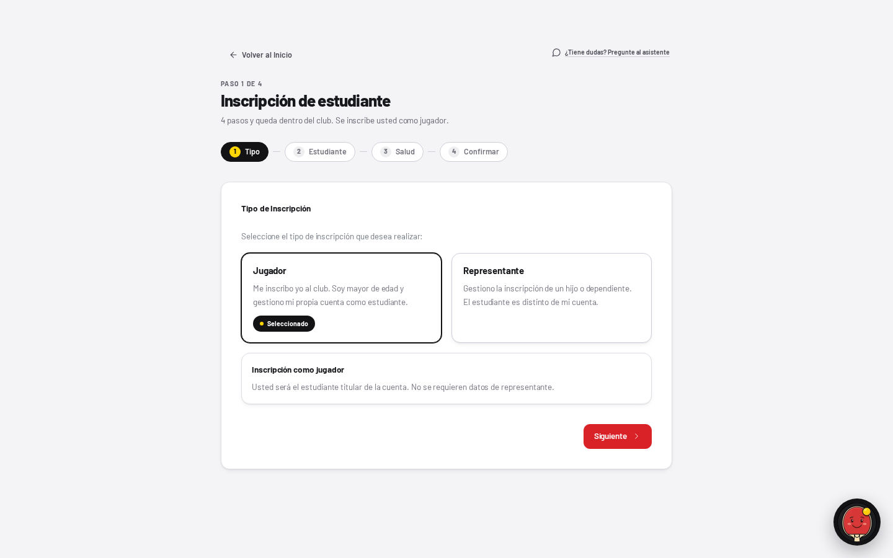
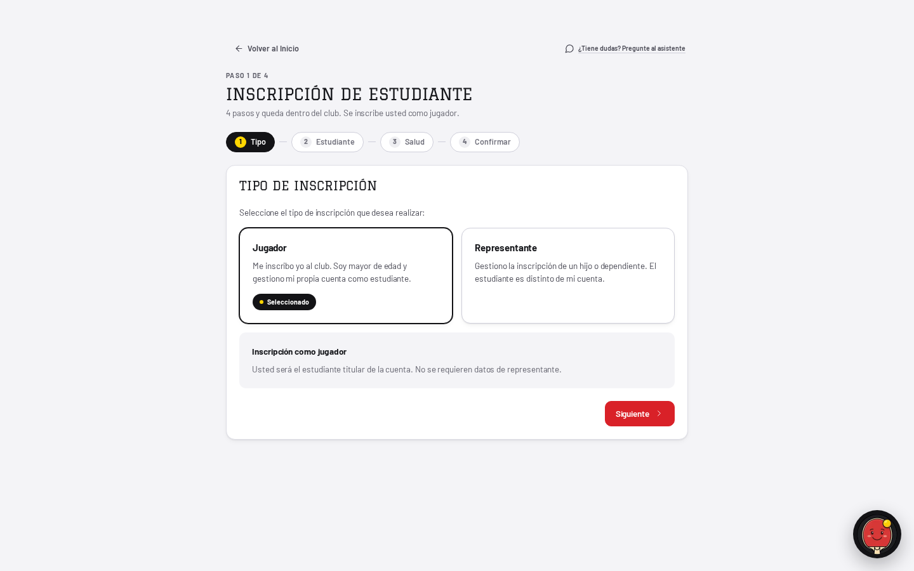
El título de la tarjeta era más chico que sus propios campos.
<h2 class="text-sm font-bold">: 13.5px, el paso denso, que es
el tamaño de una celda de tabla — y las etiquetas de los campos de adentro miden lo
mismo. Título y contenido se distinguían solo por el grosor. Toma el paso
title (Graduate, 20px, versalitas, tracking-flat) y el
<h1> de la página pasa a PageHeader, que ya tenía la
corrección hecha un nivel más arriba y nunca llegó acá porque esta pantalla lo dibujaba a
mano. Sin clase de peso en ninguno de los dos: Graduate tiene un solo
corte de 400 y pedirle negrita hace que el navegador la falsifique — la misma nota que
dejó el faro de Perfil.
Una tarjeta adentro de una tarjeta.
El bloque «Inscripción como jugador» era .card dentro del
.card del paso: un borde y una sombra que el sistema no pide. Es una nota al
pie de las dos opciones de arriba, no una hermana de ellas, así que va sobre
sunken — el escalón hundido, que es para lo que existe.
La escalera de superficies estaba invertida en tres lugares.
bg-canvas —el campo sobre el que se apoya la página— se usaba como
área hundida dentro de tarjetas: el recuadro de «Edad calculada», la casilla de
revisión del resumen y el hover de las tarjetas de tipo. Eso pinta el pozo más oscuro que
la página que rodea a la tarjeta que lo contiene. Los tres pasan a sunken,
que es el escalón del medio y el que el sistema reserva para exactamente esto.
La selección sigue siendo caucho y punto amarillo, y no es un descuido.
Se evaluó pasarla a Badge y se descartó: los cuatro tonos de la insignia son
estados, y un quinto tono «caucho» sería el vocabulario paralelo que
DESIGN.md prohíbe por nombre al cerrar esa sección. Un estado seleccionado
se dibuja con caucho más la pelota — es el idioma de FilterPill— y hay un
test que fija que nunca sea rojo.
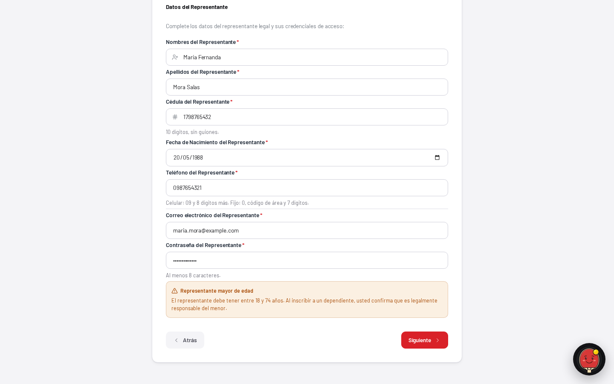
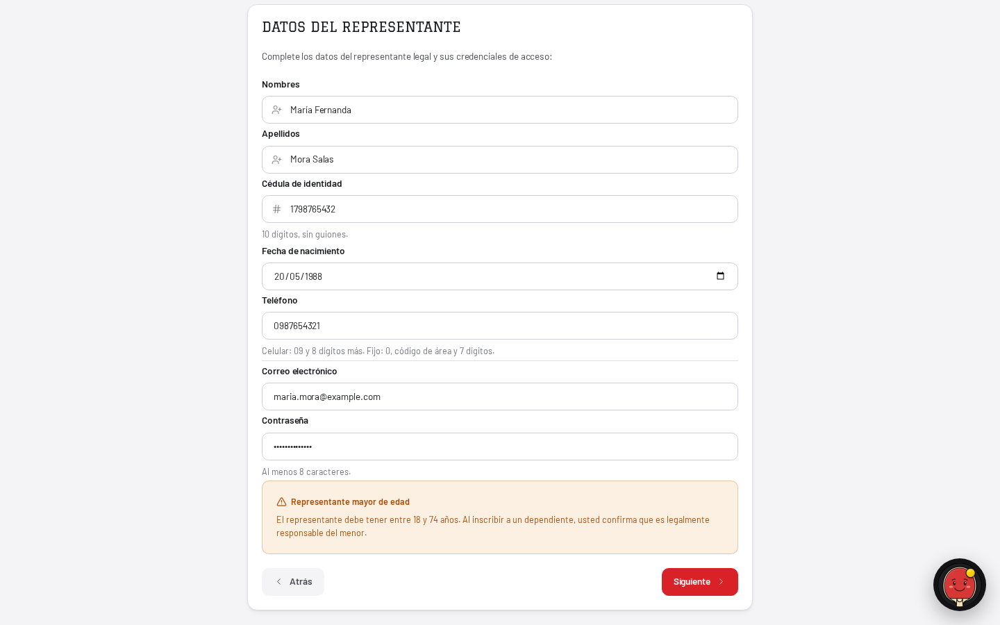
Siete asteriscos rojos por paso, marcando la mayoría.
La regla del rojo único dice que el rojo es la acción y el estado destructivo, y nada
más. Acá había siete marcas rojas por paso compitiendo con el único botón rojo que se
había ganado el color. Y peor: en este asistente casi todo es obligatorio,
así que el asterisco disparaba sobre casi todo — una marca que marca todo es una textura.
Se invirtió: se marca la minoría, con la palabra
«(opcional)» en ink-3, que es lo que WizardTextarea ya hacía
desde siempre en el mismo archivo. El atributo required se queda en el input,
así que la tecnología de asistencia lo sigue escuchando de donde de verdad significa eso.
El error tomaba prestado el rojo de la acción, con halo.
border-cata-red ring-[3px] ring-cata-red/10: el borde decía «apretame» en el
único campo que la persona escribió mal, y el halo translúcido es de la familia que el
sistema ya retiró de los botones y de los campos por medir 1.27–1.96:1,
es decir decoración con forma de indicador. Queda state-bad —la tinta de
error de la rampa— en el borde y en el mensaje, sin halo. El foco lo marca el anillo
compartido de globals.css, que es de quien es ese trabajo.
Cinco vocabularios de rojo, y uno no existía en la paleta.
.alert-error en globals.css estaba construido con
#B91C1C, un color que no aparece en «La Paleta», al 10% de relleno y al
30% de borde, con radio rounded-lg (8px) — un color inventado, un relleno
translúcido y un tercer radio, en cinco líneas. Pasa a
state-bad sobre state-bad-bg, que es el par que
Badge ya gasta y que color-contrast.test.ts ya mide, opaco de
los dos lados y al radio de control. La clase conserva el nombre porque el E2E la usa
como selector de la alerta del paso.
Siete etiquetas repetían el título de la tarjeta que las contiene.
«Nombres del Representante», «Apellidos del Representante», «Cédula del Representante»… dentro de «Datos del representante». La regla de las palabras es explícita: «ninguna etiqueta que se deduzca de otra». La tarjeta dice de quién son los datos; el campo dice cuál. Lo mismo con «(Opcional)», que estaba en el encabezado y en los dos marcadores de posición de abajo: se dice una vez, en la etiqueta.
Ocho «p. ej.» — la única cosa que la regla prohíbe por nombre.
«La interfaz no abrevia. Si algo no entra, entra menos información, nunca una palabra
cortada.» Un marcador de posición tiene lugar para la palabra entera: ahora dicen
«Por ejemplo: Juan Carlos». Con ellos se fue el (18+) del mensaje del
representante, que era una abreviatura de la frase que lo contenía —«El
representante debe ser mayor de edad (18+)»—; el número sigue estando, en la rama que sí
puede nombrarlo («entre 18 y 74 años»). Ese literal está afirmado por el caso R06 del
E2E y su aserción se actualizó con el motivo escrito al lado.
Dos criterios de mayúsculas conviviendo en la misma columna.
«Fecha de Nacimiento» y «Cédula de Identidad» al lado de «Correo electrónico» y
«Contraseña». Es el mismo defecto que dos palabras para una cosa, escrito en versalitas.
Todo pasa a mayúsculas de oración, incluidos los cinco títulos de paso
(STEP_LABELS) — las aserciones del E2E sobre esos encabezados ya eran
insensibles a mayúsculas, así que ninguna tuvo que tocarse.
Cinco radios, y el ritmo en cinco idiomas.
Convivían rounded-card, rounded-ctl, rounded-xl,
rounded-lg y rounded-full, más los 12px que
.btn-primary trae de la hoja global. Quedan los dos del
sistema, más la cápsula de la insignia. En el ritmo pasaba lo mismo: siete distancias de
primer nivel escritas a mano, y el mismo trabajo separado con 16px en un paso y 32px en
otro. Ahora es un gap-page en la columna y los escalones
section/field adentro. Esta pantalla
no renderiza AppShell, así que el candado de ritmo
(page-rhythm-wrapper.test.ts) nunca la miró — la doctrina igual aplica, y
está anotado en el código para el próximo que pase.
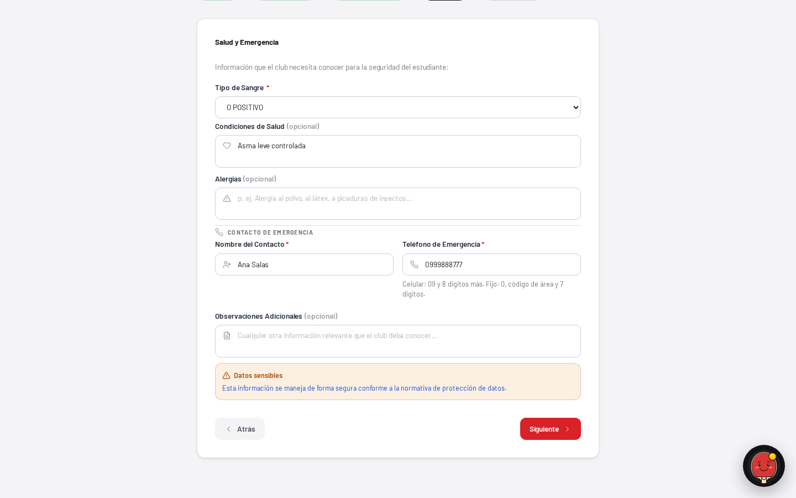
text-blue-700.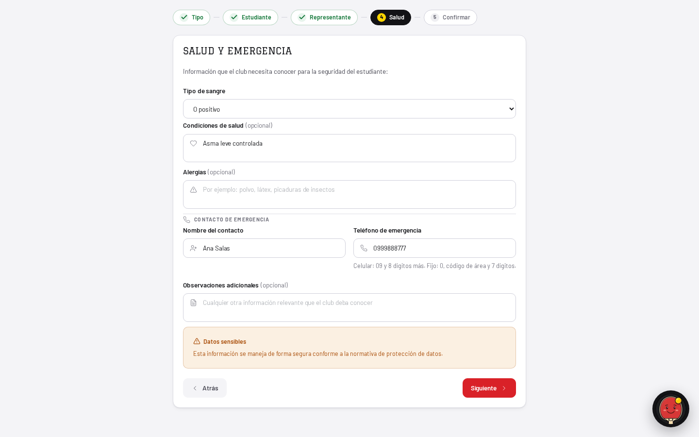
Un azul crudo de Tailwind adentro de una caja ámbar.
text-blue-700 en la segunda línea de un aviso state-warn: un
color que la paleta no tiene, haciendo una afirmación que la caja contradice. Con él se
fue text-amber-700 del panel de desarrollo. Los dos eran los últimos usos de
la paleta cruda en este archivo, así que app/student/enroll/page.tsx
sale de la lista de deuda de color-contrast.test.ts — el
candado es un trinquete y falló pidiendo exactamente eso.
El enum del backend, gritado, dos veces.
El selector imprimía bloodType.replace("_", " ") — «O POSITIVO», «AB
NEGATIVO» — y el resumen repetía la misma operación. Es la ortografía del servidor
disfrazada. BLOOD_TYPE_LABELS (en types/enrollment.ts, al lado
del enum) es lo único que una persona lee ahora: «O positivo». El valor de alambre no
cambió. Lo mismo con (FISCOMISIONAL) en la lista de instituciones, que ya
tenía las cuatro palabras bien escritas en el filtro de arriba y las volvía a derivar
mal tres líneas abajo.
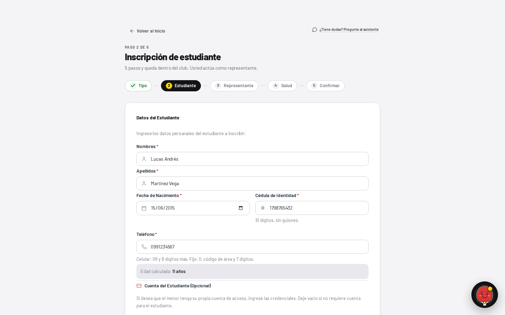
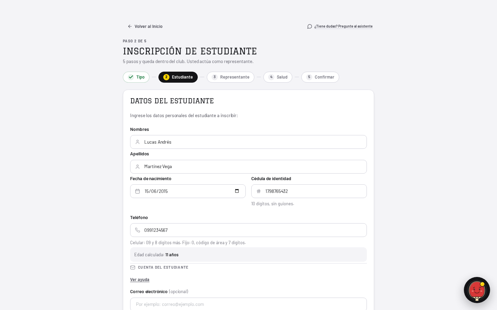
Un sub-estado invisible: el catálogo de escuelas fallaba en silencio.
fetchInstituciones().then(setInstituciones).catch(() => {}), y los dos
selectores se dibujan solo si la lista tiene entradas. Resultado: una consulta caída y un
club sin escuelas cargadas se veían idénticos, y quien venía a elegir la
escuela de su hijo veía un paso que simplemente no la pedía. Ahora el fallo tiene su
propia frase —y dice que se puede seguir, porque la institución es opcional de verdad—
mientras que un catálogo vacío sigue sin decir nada, que es lo correcto: no hay nada
entre qué elegir y eso no es un error.
La ayuda larga vivía suelta en medio del formulario.
D11c: «el subtítulo dice qué es; todo lo que explique cómo funciona se guarda».
El párrafo de dos líneas sobre la cuenta opcional del menor pasa a
ContextualHelp, que ya existía y que el panel de administración ya usa. Otros
dos se borraron en vez de guardarse, porque repetían lo que ya decía la
cosa que explicaban: «Seleccione la institución educativa del estudiante (opcional)»
debajo de una etiqueta que ahora dice «Escuela o institución (opcional)», y «Esto evita
finalizar la inscripción por accidente» debajo de la casilla que ya dice qué hace. Ninguna
ayuda repite su propio sujeto.
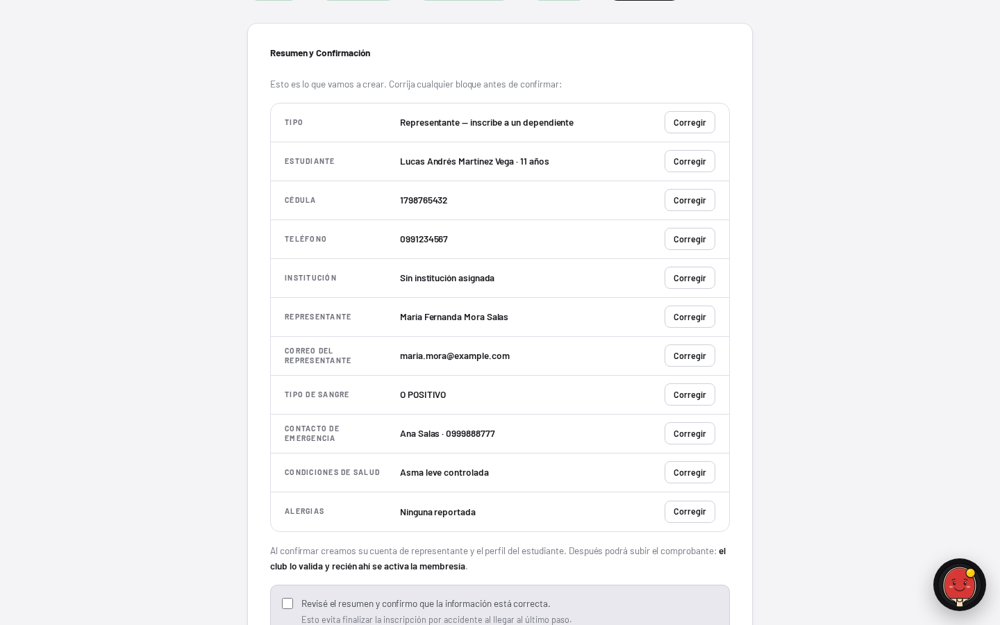
canvas y un botón «Corregir» por fila con clases sueltas.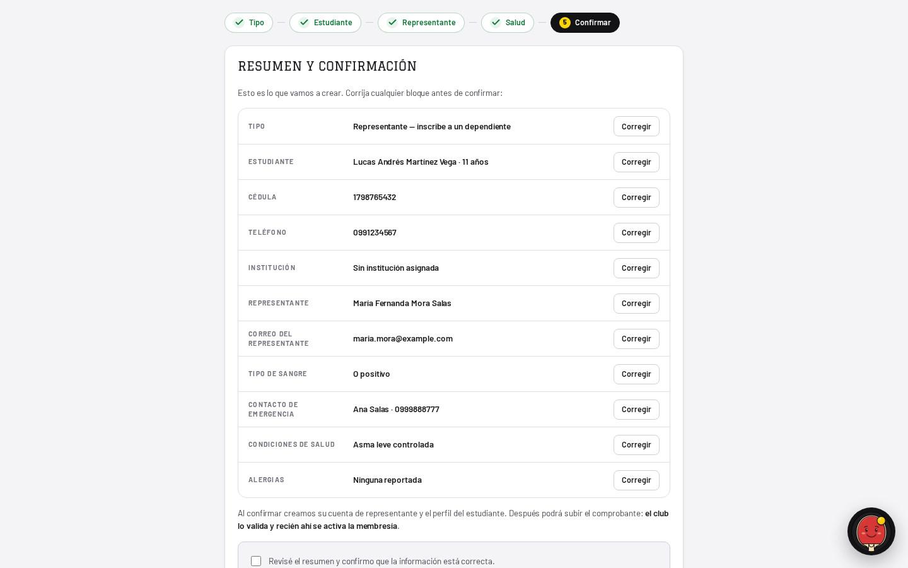
DataRowList, la marca es la insignia warn del sistema, la casilla está sobre sunken y cada acción es el Button compartido.El marco de la lista existía dos veces.
overflow-hidden rounded-card border border-line escrito a mano es
literalmente DataRowList, que además trae las hairlines entre filas. Ahora
es el componente. La fila, en cambio, se quedó local, y eso es una
decisión, no una omisión — está explicada abajo en «Lo que falta».
Cuatro controles hechos a mano donde había primitivas.
Los «Corregir» de cada fila y el botón de envío usaban buttonClasses sobre
un <button> propio; los dos botones del panel de desarrollo tenían su
borde, su radio y su hover inventados; y la pantalla de éxito usaba
.btn-primary/.btn-secondary de la hoja global, que traen 12px
de radio — el quinto radio de la pantalla. Los seis son Button ahora, o
buttonClasses donde el elemento tiene que ser un <a>
porque navega.
La marca de «Revisar» era un cuarto vocabulario de estado.
Un <span> en versalitas state-warn, hecho para esta fila.
Es un estado, y el sistema tiene una sola forma de dibujar un estado: la insignia, con su
punto y su par de tinte. Pasa a Badge tone="warn". El comportamiento no se
movió un milímetro: siguen marcándose todos los campos candidatos a la
vez —cédula del estudiante, cédula y correo del representante— y la alerta sigue sin
nombrar ninguno, que es el guardián contra convertir el alta pública en un oráculo de qué
cédulas ya están registradas (#233).
Dos tests cambiaron de closest("div") a closest("li").
Las filas del resumen son ítems de una lista ahora, así que el div más cercano
a la etiqueta «Cédula» pasó a ser el contenedor que las tiene a todas. Con
div, la aserción de que la fila «Teléfono» no lleva la marca habría
empezado a mirar la lista entera y a pasar por el motivo equivocado. Es la misma aserción
sobre el mismo elemento, pedido por la etiqueta correcta — y queda más estrecha que antes.
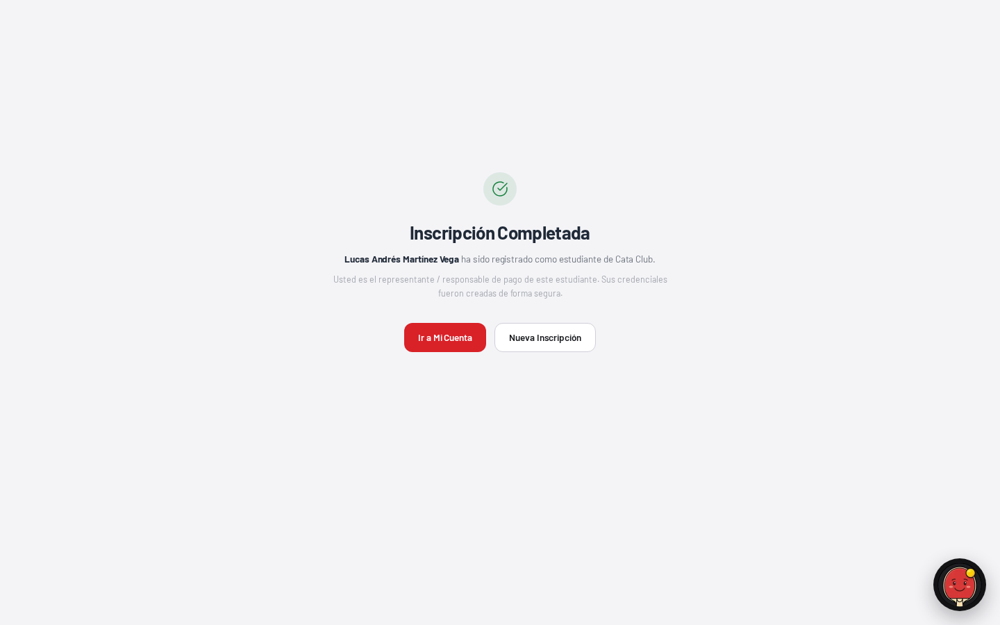
min-h-[75vh] reservados para una caja de ~300px, el h1 en Barlow, el verde equivocado, y dos botones que son todo lo que la pantalla ofrece.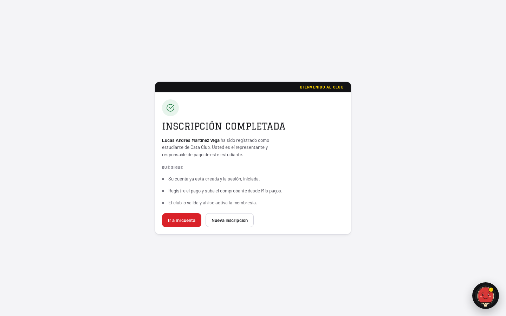
La pantalla declaraba su propio aire muerto.
min-h-[75vh] reservaba 675px para una caja de unos 300, y la caja quedaba
arriba de esa reserva: 393px de ventana vacía debajo del último botón,
el 44% — el peor número del asistente y uno de los peores del producto. Se arreglaron dos
cosas y solo una es maquetado. El sobrante ahora se reparte, que es la
respuesta que EmptyState ya tenía escrita para sí mismo —«la mitad del
aire en cada punta se lee como margen; todo en una punta se lee como un error»— y la
misma forma en la que quedó el login. La reserva se calcula contra
100vh menos las 5rem que el layout raíz pone arriba y abajo de toda ruta:
con min-h-screen pelado la pantalla medía bien pero se pasaba de la ventana
por exactamente esos 80px, y una confirmación que scrollea para no mostrar nada es peor
que el hueco.
Y no decía qué sigue.
Terminaba en «ha sido registrado» y dos botones, que no contesta ninguna de las tres
preguntas que D11 le pide a un estado final: qué pasó, por qué y qué hacer. Las tres
líneas de «Qué sigue» son el proceso real del club —la sesión ya iniciada, el pago con su
comprobante en «Mis pagos», la validación que activa la membresía— y el propio paso de
resumen ya las promete por escrito una pantalla antes. Ninguna inventa un
dato: no hay plan, ni monto, ni fecha, ni estado de inscripción, porque
POST /enrollment no devuelve nada de eso. Sin numerar, además: la secuencia
es real pero el 01/02/03 es recurso de la landing y el sistema lo deja
afuera del producto.
El verde no era el verde, y el título no era del club.
cata-state-ok es #15803D; el de la rampa es state-ok #137739. Y
el disco se teñía al 10% de opacidad cuando la rampa ya tiene un
state-ok-bg opaco y medido. El <h1> era
text-xl font-bold, o sea Barlow: es la única pantalla donde el club recibe a
alguien, y hablaba con la tipografía de la interfaz. Ahora lleva Graduate y el
hombro de caucho con su antetítulo en amarillo — la tarjeta que pide
algo, y en esta pantalla hay exactamente una, que es el tope que la regla del hombro
impone.
Una sola alineación.
La primera versión de este rediseño dejó el bloque de encabezado centrado y la lista alineada a la izquierda: dos ejes en una caja, que es literalmente el «cosas desalineadas» que originó todo esto. Manda el eje de la lista, porque la lista es la parte que hay que leer.
La regla del estado flaco pide diseñar primero con el socio nuevo. En este asistente el socio nuevo es el único caso que existe: un formulario recién abierto no tiene datos previos por definición, y las seis capturas de arriba son el recorrido completo desde cero. Lo que sí tiene estados flacos es lo que la pantalla pide a la red.
| Dato | En QA | Qué dibuja la pantalla |
|---|---|---|
| Catálogo de instituciones | Presente | Los dos selectores, con el tipo de escuela en palabras. |
| Catálogo vacío | Posible | Nada. No hay entre qué elegir y eso no es un error. |
| Catálogo caído | Antes: mudo | Ahora, una frase que dice qué pasó y que se puede seguir igual. |
| Institución elegida | Opcional | Fila del resumen, o «Sin institución asignada». |
| Cuenta del menor | Opcional | Fila «Cuenta del estudiante» solo si se cargó un correo. |
| Observaciones | Opcional | Fila del resumen solo si hay texto. Nunca una raya. |
| Plan, cuota, horario, categoría | No existen acá | Nada, y es lo correcto — ver abajo. |
La pantalla de éxito no promete nada que el endpoint no sepa. Era la
tentación obvia para llenar el 44%: un plan, un monto, una fecha de activación, un estado
de inscripción. POST /enrollment recibe alumno, ficha médica y credenciales, y
devuelve {enrolled: boolean} — no hay plan, no hay cuota, no hay horario, no
hay categoría y no hay borrador guardado. Las tres líneas de «Qué sigue» describen el
proceso del club, que es verdad y es constante, y no un dato de esta persona que habría que
inventar. «Una tarjeta honesta y sobria vale más que una linda que miente.»
EmptyState no se forzó a la pantalla de éxito.
La forma coincide —disco, título, descripción, acción— pero tres cosas no: el componente
dibuja un <b> y esta pantalla necesita el <h1> de la
página, que además está fijado como encabezado por dos casos del E2E; su disco es
state-neutral y este es un logro; y su título es Barlow a 15px, mientras que
acá va Graduate. Hacerlo entrar pedía tres props nuevas en una primitiva
con veintidós usos, para servir a uno solo — y le daría dos tipografías de título al mismo
componente, que es el vocabulario paralelo que el sistema evita. Una confirmación no es un
estado vacío: el estado vacío dice «no hay nada», este dice «lo lograste». Queda anotado
en vez de forzado.
DataRow tampoco entró en la fila del resumen.
DataRowList sí —el marco, el borde, el radio y las hairlines son suyos—,
pero la fila no. DataRow abre con un nombre flex-1 y esta lista
abre con una columna de etiqueta fija de 150px; además su name es
truncate, que cortaría un valor largo, y no lleva el alto de 56px que
min-h-drow nombra. Son dos filas distintas, no la misma fila escrita dos
veces. Si en el barrido aparece una tercera lista de etiqueta-y-valor, ahí sí hay un
componente que extraer, y ese es el momento de hacerlo.
El 27% del paso 1.
Medido, explicado y sin arreglar arriba. Bajarlo pide relleno de más o un dato inventado, y el paso hace una sola pregunta. Si el dueño prefiere el número antes que la compacidad, se revierte cambiando un token de relleno.
«p. ej.» sigue vivo en otras dos pantallas.
Cinco usos en admin/crear-cuenta y dos en
student/add-dependent. Los dos comparten
PersonIdentityFields y EmergencyContactFields, así que
heredaron la corrección en los campos compartidos, pero sus marcadores propios siguen
abreviando. Son pantallas de la fase 4, con sus propias capturas.
Los dos asistentes hermanos todavía derivan el id de la etiqueta.
slugifyLabel se queda como respaldo de WizardInput porque
add-dependent y crear-cuenta aún no declararon sus ids. Ninguno
de los dos tiene selectores por id en su E2E hoy, así que el riesgo está dormido, no
resuelto. Cuando les toque el barrido, la tabla que declarar ya tiene forma.
Los radios de .btn-primary y la familia de toasts.
globals.css todavía tiene 0.75rem (12px) en
.btn-primary y .btn-secondary, y cuatro toasts con colores
fuera de la paleta (#B91C1C, #15803D, #1D4ED8, #D97706). Esta pantalla ya no usa ninguno
de los dos botones, así que la corrección es posible sin romperla — pero son clases
globales con consumidores en media docena de pantallas todavía sin migrar, y cambiarlas
acá repintaría pantallas que este PR no mide. Van con el barrido.
Suite completa, tipos, lint y punta a punta sobre este cambio:
npm test — 187 archivos, 3074 tests, todo en verde (eran 186 y 3064; el archivo nuevo es enroll-visual-contract.test.tsx).
npm run type-check — sin errores.
npm run lint — sin advertencias.
npx playwright test enroll-qa — 81 casos, todos pasando, después de renombrar once etiquetas.
Las capturas se regeneran con el guión de medición contra QA en
http://localhost:3000, a 1440×900, recorriendo el flujo de representante y
respondiendo el POST del alta desde el navegador para no sembrar datos. El
índice de todas las comparaciones está en README.md.